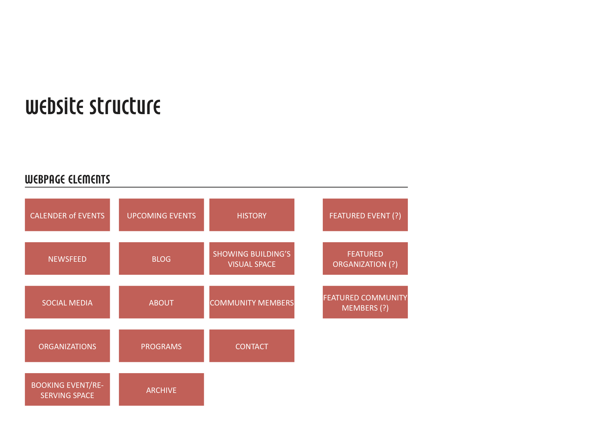
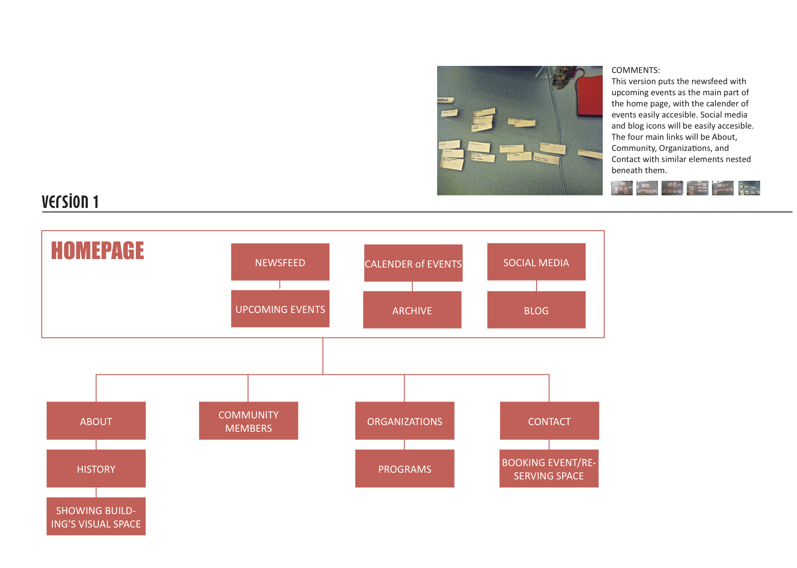

EMW is an artist community that organizes events at a bookstore called East Meets West located in Cambridge, MA.
MISSION STATEMENT: EMW's mission is to establish a transformative community-space to expand and fulfill creative potential. EMW's mission is to establish a transformative space for individuals and communities to fulfill their artistic and creative potentials, overcoming mental, socioeconomic, racial, and other barriers along the way. EMW Bookstore will provide space for the organic collaboration and remixing of science, technology, culture, music, and other art forms, allowing new modes of thinking and interaction to emerge. All of our activities will be rooted in a commitment to sharing, giving, trust, and mutual support and respect to expand the concept of family to our immediate community and the world.
As the bookstore space is being renovated, EMW would like the website to inform the Boston community about new spaces, ideas, partnerships, and events. The goal of the website is to have a complete rebranding of EMW as a non-profit arts, technology, and community space. This will be accomplished by having the website serve as a portal into other communities involved with EMW.
This website will serve the community, both members and non-members.
User Type 1: As a member of the EMW community, this website serves as a portal to keep him/her plugged in with the current and upcoming events and projects. He/she will use the website mainly for it's calender, links, and to stay connected with the other members of the community. This website will bring all EMW-related sites/blogs/components into one place, creating a visual community space online.
User Type 2: As a non-member of the EMW community, this website enlightens the curious user to "What is EMW?". It is important that the user leaves the website understanding what the mission of EMW is and what it aims to accomplish. The events, programs, and connected organizations will be laid out so that any outside member can find out the when and what events that they might attend. The user should leave with both a sense of what drives EMW as an organization and what brings them together as a community. The user should have the necessary information to get plugged into EMW by either attending upcoming events and/or reaching out to established members via their contact information.
These are the components of EMW's programs, organizations, and social media sites.
Programs:
Organizations:
Social Media:
 
Homepage: The homepage will emphasize upcoming events with the use of strong visuals and a calendar. This page focuses on addressing the goals of informing the user of EMW events, and will also give the user a preview of programs and organizations in EMW.
About: The About page will hold information about EMW
as an organization, and will include the mission statement. The page will
address the goal of familiarizing the user with the rebranding of EMW.
History: As a subpage of About, this will go through the
history of EMW and how it became the space it is today.
Visual Space: As another optional subpage, this will
have visuals of the building's physical space so the audience can connect the new
buildings spaces to their new visions and goals.
Community Members: The Community page will display the people that make up EMW and their social media sites or contact information. The page will show the community space that a user would hope to get involved with if he/she became more plugged in with EMW.
Organizations/Programs: The Organization and Programs pages will host all of the different groups and will serve as the portal into the other communities involved with EMW (listed above).
Contact: The contact page will be important for
any user that would like to get in contact with EMW if they have questions or if they are interested to be more involved.
Booking event/Reserving space: This potential subpage will
be for users that are already a part of EMW and would like to book
the space for a day for their own events.